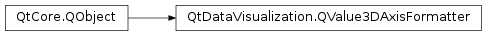

QtDataVisualization.QValue3DAxisFormatter¶
Inherited by: QtDataVisualization.QLogValue3DAxisFormatter
Synopsis¶
Functions¶
- def
allowNegatives() - def
allowZero() - def
axis() - def
gridPositions() - def
labelPositions() - def
labelStrings() - def
locale() - def
markDirty([labelsChange=false]) - def
setAllowNegatives(allow) - def
setAllowZero(allow) - def
setLocale(locale) - def
subGridPositions()
Virtual functions¶
- def
createNewInstance() - def
populateCopy(copy) - def
positionAt(value) - def
recalculate() - def
stringForValue(value, format) - def
valueAt(position)
Detailed Description¶
-
class
PySide2.QtDataVisualization.QtDataVisualization.QValue3DAxisFormatter([parent=nullptr])¶ Parameters: parent – PySide2.QtCore.QObject
-
PySide2.QtDataVisualization.QtDataVisualization.QValue3DAxisFormatter.allowNegatives()¶ Return type: PySide2.QtCore.bool
-
PySide2.QtDataVisualization.QtDataVisualization.QValue3DAxisFormatter.allowZero()¶ Return type: PySide2.QtCore.bool
-
PySide2.QtDataVisualization.QtDataVisualization.QValue3DAxisFormatter.axis()¶ Return type: PySide2.QtDataVisualization.QtDataVisualization::QValue3DAxis
-
PySide2.QtDataVisualization.QtDataVisualization.QValue3DAxisFormatter.createNewInstance()¶ Return type: PySide2.QtDataVisualization.QtDataVisualization::QValue3DAxisFormatter
-
PySide2.QtDataVisualization.QtDataVisualization.QValue3DAxisFormatter.gridPositions()¶ Return type:
-
PySide2.QtDataVisualization.QtDataVisualization.QValue3DAxisFormatter.labelPositions()¶ Return type:
-
PySide2.QtDataVisualization.QtDataVisualization.QValue3DAxisFormatter.labelStrings()¶ Return type: list of strings
-
PySide2.QtDataVisualization.QtDataVisualization.QValue3DAxisFormatter.locale()¶ Return type: PySide2.QtCore.QLocale
-
PySide2.QtDataVisualization.QtDataVisualization.QValue3DAxisFormatter.markDirty([labelsChange=false])¶ Parameters: labelsChange – PySide2.QtCore.bool
-
PySide2.QtDataVisualization.QtDataVisualization.QValue3DAxisFormatter.populateCopy(copy)¶ Parameters: copy – PySide2.QtDataVisualization.QtDataVisualization::QValue3DAxisFormatter
-
PySide2.QtDataVisualization.QtDataVisualization.QValue3DAxisFormatter.positionAt(value)¶ Parameters: value – PySide2.QtCore.floatReturn type: PySide2.QtCore.float
-
PySide2.QtDataVisualization.QtDataVisualization.QValue3DAxisFormatter.recalculate()¶
-
PySide2.QtDataVisualization.QtDataVisualization.QValue3DAxisFormatter.setAllowNegatives(allow)¶ Parameters: allow – PySide2.QtCore.bool
-
PySide2.QtDataVisualization.QtDataVisualization.QValue3DAxisFormatter.setAllowZero(allow)¶ Parameters: allow – PySide2.QtCore.bool
-
PySide2.QtDataVisualization.QtDataVisualization.QValue3DAxisFormatter.setLocale(locale)¶ Parameters: locale – PySide2.QtCore.QLocale
-
PySide2.QtDataVisualization.QtDataVisualization.QValue3DAxisFormatter.stringForValue(value, format)¶ Parameters: - value –
PySide2.QtCore.qreal - format – unicode
Return type: unicode
- value –
-
PySide2.QtDataVisualization.QtDataVisualization.QValue3DAxisFormatter.subGridPositions()¶ Return type:
-
PySide2.QtDataVisualization.QtDataVisualization.QValue3DAxisFormatter.valueAt(position)¶ Parameters: position – PySide2.QtCore.floatReturn type: PySide2.QtCore.float
© 2018 The Qt Company Ltd. Documentation contributions included herein are the copyrights of their respective owners. The documentation provided herein is licensed under the terms of the GNU Free Documentation License version 1.3 as published by the Free Software Foundation. Qt and respective logos are trademarks of The Qt Company Ltd. in Finland and/or other countries worldwide. All other trademarks are property of their respective owners.